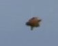
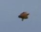

Time to read:
4 min
October 28, 2015
Sonic
The Blue Blur HimSelf….
He is a hero to a LOT of people. Even people you dont know or understand.
Like Cartoons?
Apparently some sites are mirroring episodes online of yesteryear.
YEAH. You bet.
BUT they missed the “gotta go fast” episodes…
Hey Artail…whered you go? We wanna see em all, not catch them all!
WHA?
He’s real?
poke poke…yes, VERY real.
Something about not being here on this planet…
More like not wanting to be here for some reason.
Yes, Mobius exists.
We dont call it that.
Its a few light years from here. Its a super earth.
“Little planet”? Hardly? Good name for a song title though..
Try Gilese (581?).
The planets name is Pavonia.
Hardly any Terrans live here.
We trade with a lot of other planets and have our own space station.
Here is a glimpse into the life of Sonic and friends:
Reading hint:
This is in COLOR and certain shades indicate differing ability to communicate.
Telepathic messages are one color, some other things in others.
The document should specify which but in case it doesnt, use best judgement.
There was a TAD of confusion when this was initially written, Sonic’s parents live on Altara, Earth is quite a ways from Pavonia so any reference to a nearby Earth actually means Altara.
You’ll see what I mean what you get to the part about Alpha Centauri.
Cross “Deep space nine” with “Sonic comics” and you get the rough idea.
Actual references to any other material or names other than what is known in the Sonic-verse (as it were) are purely coincidental.
Pavonia’s nearest neighboring star system has very important interstellar relations with others. Terrans live there.
Youd like it.
Despite the military presence.
“CAN I PROVE THIS IS REAL?” These following two pics should be an eye opener.
The first is a sketch from memory of a photo taken on Alpha Centauri of yours truely.
The second is a sighting report freeze frame.
The sketch was done in Daytona Beach (2000?) years before the actual sighting event.
The VERY SAME ship that was designed is seen below.
Coincidence? I THINK NOT!
 

For reference is the following information:
Apr 30 2010-2011 Vancouver, BC.
[Full 3D view of craft.]
TIMECODE: 82s in
In case YOUTUBE video gets removed, just stare at the pic.
There are multiple angles as it rotates around for the camera.
Some say its a “fake video” due to the post-production TV news anchor-like effects, which have NOTHING TO DO with the actual video. As you know, even news agencies South America(Brazil) have shot actual footage of UFO in thier area. So, this BY ITSELF does NOT discredit the video in ANY way.
As I said before, it hard to disprove YOUR OWN FLEET when ITS STARING YOU IN THE FACE. And there are MORE where those came from. I KNOW because I HELPED BUILD THEM. I know what theyre capable of.
-You think I WANT TO BE HUMAN?
YECK!
Id go back to being a “monster” in a heart beat.